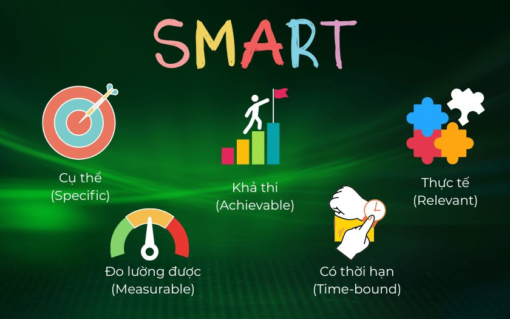

Khi ngu dốt được coi là lòng yêu nước

“Khi ngu dốt được coi là lòng yêu nước, thì thông minh trở nên nguy hiểm.” Câu nói của Isaac Asimov nghe như một nghịch lí.
“Khi ngu dốt được coi là lòng yêu nước, thì thông minh trở nên nguy hiểm.” Câu nói của Isaac Asimov nghe như một nghịch lí.

Dạo gần đây có tuổi rồi nên tự nhiên trong đầu mình nảy ra ý tưởng là, "làm sao để biết khi 90 tuổi khi nhìn lại mình sẽ hối tiếc điều gì nhất?".

Cách áp dụng "Lý thuyết trò chơi" vào thực tế, để bản thân và mọi người đều có lợi, dẫn đến cái lợi chung cho toàn cộng đồng.

Tôi đã sửng sốt khi biết rằng sự đo lường có vai trò quan trọng thế nào trong việc cải thiện thể trạng của con người - Bill Gates viết.


Tâm lý học đám đông: Từ sân khấu âm nhạc đến những “chim mồi” vô hình
Xuân lan thu cúc thành hư sự